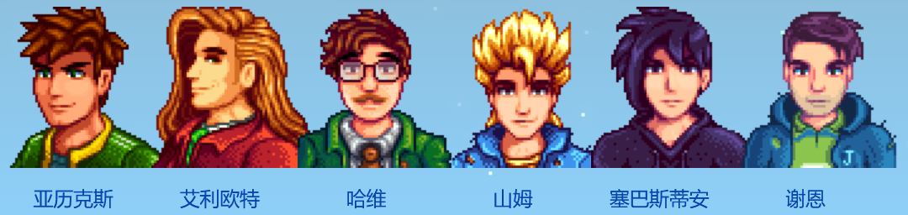
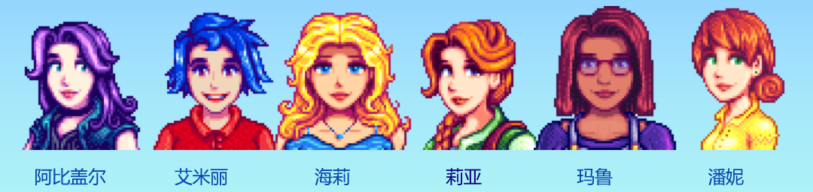
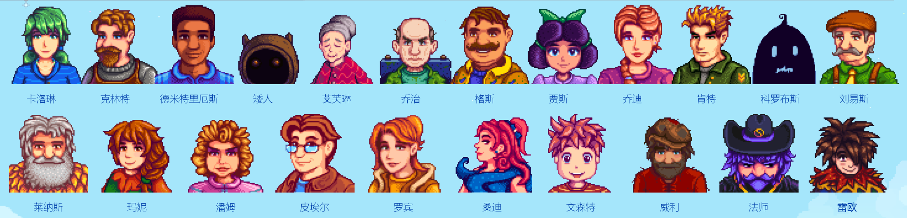
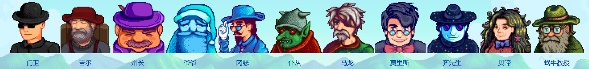

村民
村民是《星露谷物语》中的人物。他们是住在鹈鹕镇及周边的居民。每个村民都有一个自己的每日行程，所以在游戏中的不同时间里，他们会在不同的位置。
他们会提供任务，也可以给他们送礼物以增进感情。每个村民有各自的喜恶，对你赠与的礼物也会有不同的反应。
挡在村民行走路径上的物品可能会永久消失。
村民的礼物偏好不同，送不同的礼物也有不同的效果。
爱心事件
与村民的友谊值达到一定程度时，将解锁特殊事件（触发条件详见每位村民的页面）。玩家可能会永远错过某个事件，不过大多数事件都可以在满足条件时触发，无需按顺序触发。
在某些爱心事件中，玩家选择对话内容后不会影响其与任何村民的友谊，而在另一些事件中，选择某些对话内容会增加或减少玩家与村民的友谊值。可增加最多友谊值的是莱纳斯的8心事件（+250点友谊值），而可减少最多友谊值的是潘妮的8心和10心事件（-1500点友谊值）。
恋爱
一些村民可与玩家发展恋爱关系（查看可结婚的对象）。当你与其中一位村民达到了8颗心的好感度，向其赠送花束可将好感度上限提升为10心。（在结婚之前，你可以向多名村民赠送花束并不会对游戏有任何的影响。在婚后这么做有可能会使你与配偶的好感度降低。）当你与一位可结婚的村民好感度达到10颗心时，可向其赠送美人鱼吊坠表示求婚，村民不会拒绝玩家的求婚。若玩家未婚且与科罗布斯的友谊达到10心，也可以向其赠送虚空幽灵吊坠来邀请他做你的室友，科罗布斯同样会接受邀请。
当好感度达到12.5颗心（3125点友谊值）的时候，他们会送给玩家一枚星之果实（如果玩家之前未通过该方式获得过星之果实）。
可结婚的对象
单身男性

单身女性

不可结婚对象

不可送礼物的对象
